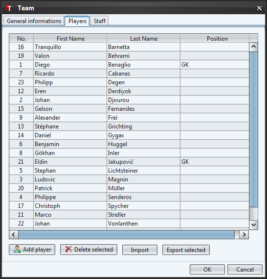
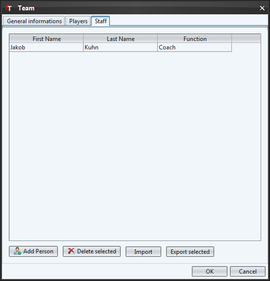

This screen allows you to create teams. You can add one by clicking on the "New team" button or by selecting the corresponding entry in the context menu (right mouse button).
Double-click on a team or use the context menu to edit a team.
The button "Import" makes it possible to import teams of another tournament.
You are also able to save the teams in an XML file that you can use it in another application. To do this, select the teams to export and click on the "Export selected" button.

To add a logo to the team, you have to click on the quadratic button on the upper right side and select the desired image.
If you like to remove the image then click with the right mouse button on the image and select "Reset logo" in the context menu.

The tab "Players" allows you to add players to the team. The procedure is exactly the same as by the teams. Further details to enter some players you can find in the chapter Players.

The tab "Staff" allows you to add persons which work for the the team (e.g. Coach). The procedure is exactly the same as by the teams. Further details to enter persons you can find in the chapter Staff.